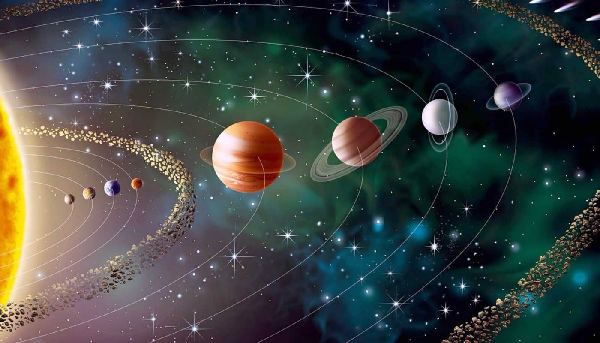

<!DOCTYPE html>
<html lang="pt-br"></html>
  <head>
      <meta charset="utf-8>
      <title>A CRIATIVIDADE DO UNIVERSO</title>
      <link rel="stylesheet" href="style.css">
  </head>
  <body>
    <h1>O universo da astronomia </h1>
                                             
    <p> É uma ciência multidisciplinar que estuda uma grande variedade de corpos celestes e fenômenos que acontecem fora da Terra.</p>
    <p> Ela estuda a <strong> lua </strong> , o Sol, os planetas do Sistema Solar, cometas, galáxias, nebulosas, entre outros.</p>
    <p> Em busca de entender um pouco melhor o <em> universo </em> que vivemos.</p>
    <p> A astronomia é uma das mais antigas ciências.</p>
     
                       
  <ul>
      <li> class="itens">contatos: wpp 46 9923-4456</li>
      <li> class="itens">email: criatividade_do_uvniverso@gmail.com</li>
      
   </body>
   
                      
